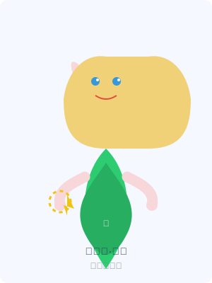

艾莉亚·晨星
返回首页

基本信息
姓名：
艾莉亚·晨星
种族：
精灵
年龄：
250岁（精灵年龄）
身份：
水晶森林的守护者，光明系魔法师
阵营：
秩序善良
能力与特长
- 光明魔法精通：能够施放治疗术、光明护盾和净化魔法
- 森林亲和力：与自然元素和森林生物有着特殊的联系
- 弓箭技艺：擅长使用长弓进行远程攻击
- 守护之心：保护同伴时魔法效果增强
- 永恒视野：能够感知隐藏的魔法痕迹和能量波动
背景故事
艾莉亚·晨星出生于精灵族最古老的皇室家族晨星家族，是现任精灵王的幼女。从小展现出非凡的光明魔法天赋，被大祭司选中作为水晶森林守护者的候选人。
在她200岁成年仪式上，艾莉亚成功与水晶森林之心建立了精神连接，获得了森林守护者的称号和力量。从那时起，她肩负起保护水晶森林的重任，确保这片古老的森林不受外界的侵害。
尽管身为皇室成员，艾莉亚更喜欢在森林中与自然和动物为伴，而不是参与宫廷政治。她性格善良、富有同情心，总是愿意帮助需要帮助的生物，无论是精灵族的成员还是其他种族的朋友。
近年来，随着黑暗力量在世界边缘开始苏醒，艾莉亚感到了前所未有的威胁。她开始走出森林，寻找能够共同对抗黑暗的盟友，这也是她与凯恩和莱奥相识的契机。
性格特点
艾莉亚性格温和但坚定，有着强烈的正义感和责任感。作为守护者，她总是将他人的安全置于自己之上。她对自然和生命有着深刻的尊重，厌恶任何破坏平衡的行为。
有时，艾莉亚会显得过于理想化，对世界的复杂性认识不足。她相信每个人都有善良的一面，愿意给予他人改过自新的机会。这种包容的性格有时会让她陷入危险，但也赢得了许多人的信任和友谊。